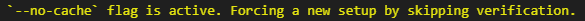

Tutorial 2: Configuration and caching¶
Learn how configs work and how GOLIAT avoids redundant simulations.
What you'll learn¶
- How config files extend each other (inheritance)
- Overriding specific parameters
- Validating configs before running
- How GOLIAT knows when to skip completed simulations
- Using the
--no-cacheflag
Related documentation: Configuration guide
Prerequisites¶
- Completed tutorial 1 (far-field basics)
- Basic understanding of JSON files
Bash setup¶
from pathlib import Path
import importlib.util
p = Path.cwd()
while not (p / "scripts" / "notebook_helpers.py").exists():
p = p.parent
spec = importlib.util.spec_from_file_location("_", p / "scripts" / "notebook_helpers.py")
m = importlib.util.module_from_spec(spec)
spec.loader.exec_module(m)
run_bash = m.get_run_bash()
import IPython
IPython.core.display.max_output_size = None
This helper function lets you run bash commands from Python cells using run_bash('command'). The setup also disables output truncation so you can see all command output.
If you're using bash directly (recommended), ignore the Python code blocks and just run the commands directly. Make sure to always run source .bashrc first.
Running: source .bashrc && cat configs/base_config.json
------------------------------------------------------------
{
"use_gui": true,
"execution_control": {
"do_setup": true,
"do_run": true,
"do_extract": true,
"only_write_input_file": false,
"auto_cleanup_previous_results": []
},
"simulation_parameters": {
"global_auto_termination": "GlobalAutoTerminationUserDefined",
"convergence_level_dB": -15,
"simulation_time_multiplier": 3.5,
"number_of_point_sensors": 2,
"point_source_order": [
"lower_left_bottom",
"top_right_up",
"lower_right_bottom",
"top_left_up",
"lower_left_up",
"top_right_bottom",
"lower_right_up",
"top_left_bottom"
]
},
"gridding_parameters": {
"global_gridding": {
"grid_mode": "manual",
"manual_fallback_max_step_mm": 3.0
},
"padding": {
"padding_mode": "automatic",
"manual_bottom_padding_mm": [0, 0, 0],
"manual_top_padding_mm": [0, 0, 0]
}
},
"solver_settings": {
"kernel": "acceleware",
"server": "localhost",
"boundary_conditions": {
"type": "UpmlCpml",
"strength": "Low"
}
},
"verbose": false,
"manual_isolve": true,
"data_setup": {
"gdrive_url": "https://drive.google.com/drive/folders/1Ps0ilW6yx4Z5VoWRZKrkhP225m8lBQOV?usp=sharing&confirm=t",
"gdrive_url_aws": "https://drive.google.com/uc?id=1etS9uyi0Ns-vOtG2q0G1hU0LLw0M_dq7",
"data_dir": "data"
}
}
------------------------------------------------------------
Command completed with return code: 0
0
It contains settings shared across all studies: - use_gui: whether to use the GUI - simulation_parameters: which we covered last tutorial - gridding_parameters: the default gridding settings. If you forgot to set your specific gridding settings, this is where it will default to. - solver_settings: settings for iSolve. We already covered the kernel, but here you can also enter the name of a remote ARES server here if you want. You can set the strength of the boundary condition too.
These apply to every study unless overridden. It recursively merges nested dictionaries: child values override parent values for matching keys, while preserving all parent keys not specified in the child.
Study configs¶
Now look at far_field_config.json:
Running: source .bashrc && cat configs/far_field_config.json
------------------------------------------------------------
{
"extends": "base_config.json",
"study_type": "far_field",
"execution_control": {
"do_setup": true,
"only_write_input_file": false,
"do_run": true,
"do_extract": true,
"batch_run": false
},
"phantoms": [
"duke",
"ella",
"eartha",
"thelonious"
],
"frequencies_mhz": [
450,
700,
835,
1450,
2140,
2450,
3500,
5200,
5800
],
"far_field_setup": {
"type": "environmental",
"environmental": {
"incident_directions": [
"x_pos",
"x_neg",
"y_pos",
"y_neg",
"z_pos",
"z_neg"
],
"polarizations": [
"theta",
"phi"
]
},
"auto_induced": {
"grid_resolution_deg": 15
}
},
"simulation_parameters": {
"bbox_padding_mm": 0,
"simulation_bbox_points": 8,
"number_of_point_sensors": 2
},
"gridding_parameters": {
"global_gridding": {
"grid_mode": "manual",
"manual_fallback_max_step_mm": 3.0
},
"global_gridding_per_frequency": {
"450": 2.5,
"700": 2.5,
"835": 2.5,
"1450": 2.5,
"2140": 1.694,
"2450": 1.482,
"3500": 1.0,
"5200": 1.0,
"5800": 1.0
},
"padding": {
"padding_mode": "manual",
"manual_bottom_padding_mm": [0, 0, 0],
"manual_top_padding_mm": [0, 0, 0]
}
}
}
------------------------------------------------------------
Command completed with return code: 0
0
It starts with:
This inherits everything from base_config.json, then adds or overrides: - study_type (specifies this is far-field) - phantoms (lists which phantoms to use) - frequencies_mhz (which frequencies to simulate) - far_field_setup (far-field specific settings like directions, polarizations)
The result is a complete config (base settings + far-field overrides).
graph TD
base[base_config.json
Shared settings]
nf[near_field_config.json
Near-field specifics]
ff[far_field_config.json
Far-field specifics]
base -->|extends| nf
base -->|extends| ff
style base fill:#4CAF50
style nf fill:#2196F3
style ff fill:#2196F3
Creating custom configs¶
Let's create a custom far-field config that changes just a few things:
Running: source .bashrc && cat configs/tutorial_2_custom.json
------------------------------------------------------------
{
"extends": "far_field_config.json",
"phantoms": ["thelonious", "eartha"],
"frequencies_mhz": [700, 835]
}
------------------------------------------------------------
Command completed with return code: 0
0
{
"extends": "far_field_config.json",
"phantoms": ["thelonious", "eartha"],
"frequencies_mhz": [700, 835]
}
This inherits from far_field_config.json (which already inherits from base_config.json), then overrides only the phantoms and frequencies.
The inheritance chain: base_config.json → far_field_config.json → tutorial_2_custom.json
Everything else (directions, polarizations, solver settings, gridding) comes from the parent configs.
Config validation¶
Before running a study, validate the config file to catch errors early.
Running: source .bashrc && goliat validate tutorial_2_custom.json
------------------------------------------------------------
Validating config: tutorial_2_custom.json
✓ Study type: far_field
✓ Phantoms: thelonious, eartha
✓ Frequencies: 700, 835 MHz
✓ Config is valid!
------------------------------------------------------------
Command completed with return code: 0
0
Running: source .bashrc && goliat validate tutorial_2_custom.json
------------------------------------------------------------
Validating config: tutorial_2_custom.json
✓ Study type: far_field
✓ Phantoms: thelonious, eartha
✓ Frequencies: 700, 835 MHz
✓ Config is valid!
------------------------------------------------------------
Command completed with return code: 0
0
The validator checks: - Required fields are present (study_type, phantoms) - Near-field configs have antenna_config; far-field configs have frequencies_mhz - Config file loads successfully (will error if files referenced in extends don't exist)
Note: The validator checks that required fields exist, but doesn't validate that study_type values are valid. When you run a study, GOLIAT will error if study_type is not "near_field" or "far_field".
For full parameter reference: configuration guide
The caching system¶
GOLIAT tracks completed simulations and skips them on reruns. This saves time when you run a study multiple times (common during development or parameter tuning).
How it works¶
When a simulation completes, GOLIAT writes a config.json metadata file in the results directory. This file contains: - Config hash (SHA256 hash of the simulation-specific config) - Config snapshot (the full simulation-specific config used for this simulation) - Setup timestamp (when setup completed) - Completion flags (which phases finished: run_done, extract_done)
Note: The setup_done flag is not stored in the metadata file. Instead, GOLIAT computes it during verification by checking if the .smash project file exists and is valid. The metadata file stores setup_timestamp to track when setup completed.
On the next run, GOLIAT: 1. Generates a hash of the current config 2. Checks if a config.json exists in the results directory 3. Compares hashes 4. If they match and deliverables exist, skips the simulation
Deliverables for the run phase are _Output.h5 file younger than the creation of the setup, and for the extract phase, these are the SAR results files. If these are not present after the phase, something must have gone wrong. Next time you run this simulation, GOLIAT will try again.
Seeing it in action¶
Run a simple simulation:
Running: source .bashrc && goliat study tutorial_2_caching.json --no-cache
------------------------------------------------------------
Starting Sim4Life application...
Initializing Application [stdout]
Initializing Application [stderr]
[Warn] Unable to load module 'C:\Program Files\Sim4Life_8.2.0.16876\MusaikInterface.xdll'
Josua : [Info] Sync
Josua : [Info] Sync
Josua : [Info] Command [Query Handshake] <ef6545cd-b438-4118-91aa-db8ea355525a;127.0.0.1;WIN10-NEW>
Josua : [Info] Property [CAresSettings]
[Info] Connection to local Ares successfully established.
Sim4Life application started.
--- Starting Far-Field Study: tutorial_2_caching.json --- [FarFieldStudy._run_study]
--- Processing Simulation 1/1: thelonious, 700MHz, x_pos, theta --- [FarFieldStudy._run_study]
--- Starting: setup --- [profile]
Project path set to: C:/Users/user/repo-clean/results/far_field/thelonious/700MHz/environmental_theta_x_pos/far_field_thelonious_700MHz_environmental_theta_x_pos.smash [ProjectManager.create_or_open_project]
`--no-cache` flag is active. Forcing a new setup by skipping verification. [ProjectManager.create_or_open_project]
--- Simulation-specific progress logging started: C:/Users/user/repo-clean/results/far_field/thelonious/700MHz/environmental_theta_x_pos\progress.log ---
--- Simulation-specific verbose logging started: C:/Users/user/repo-clean/results/far_field/thelonious/700MHz/environmental_theta_x_pos\verbose.log ---
Deleting existing project file at C:/Users/user/repo-clean/results/far_field/thelonious/700MHz/environmental_theta_x_pos/far_field_thelonious_700MHz_environmental_theta_x_pos.smash [ProjectManager.create_new]
Creating a new empty project in memory. [ProjectManager.create_new]
Initializing model by creating and deleting a dummy block... [ProjectManager.create_new]
Model initialized, ready for population. [ProjectManager.create_new]
- Setup simulation... [FarFieldStudy.subtask]
--- Setting up single Far-Field sim --- [FarFieldSetup.run_full_setup]
- Load phantom... [FarFieldSetup.run_full_setup]
--- Running Phantom Check --- [PhantomSetup._log]
Found 2 total entities in the project. [PhantomSetup._log]
--- Phantom Check Result: Phantom not found in project. --- [PhantomSetup._log]
Phantom not found in document. Importing from 'C:\Users\user\repo-clean\data\phantoms\thelonious.sab'... [PhantomSetup._log]
[Info] Checking out license feature 'MODEL_THELONIOUS', version 1.0, (1).
License : [Info] Acquired [ MODEL_THELONIOUS 1.0 ]
Modeler : [Warn] No exact match found for SkullNot changing colors.
Modeler : [Warn] No exact match found for SkullNot changing colors.
Phantom imported successfully. [PhantomSetup._log]
- Subtask 'setup_load_phantom' done in 8.88s [FarFieldSetup.run_full_setup]
- Done in 8.88s [FarFieldSetup.run_full_setup]
- Configure scene (bbox, plane wave)... [FarFieldSetup.run_full_setup]
Creating simulation bounding box for far-field... [FarFieldSetup._create_or_get_simulation_bbox]
- Created far-field simulation BBox with 50mm padding. [FarFieldSetup._create_or_get_simulation_bbox]
- Creating simulation: EM_FDTD_thelonious_700MHz_x_pos_theta [FarFieldSetup._create_simulation_entity]
- Using simulation time multiplier: 3.5 [FarFieldSetup._apply_simulation_time_and_termination]
- Simulation time set to 11.44 periods. [FarFieldSetup._apply_simulation_time_and_termination]
- Setting termination criteria to: GlobalAutoTerminationUserDefined [FarFieldSetup._apply_simulation_time_and_termination]
- Convergence level set to: -15 dB [FarFieldSetup._apply_simulation_time_and_termination]
- Subtask 'setup_configure_scene' done in 0.33s [FarFieldSetup.run_full_setup]
- Done in 0.33s [FarFieldSetup.run_full_setup]
- Assign materials... [FarFieldSetup.run_full_setup]
Assigning materials... [MaterialSetup.assign_materials]
Simulation : [Warn] Some properties for material "Air" have been set to their value according to the selected database
[Info]
Mass Density has changed from 1000 to 1.2050000000000001
Mass Density has changed from 1.2050000000000001 to 1.2
Relative Permittivity has changed from 1 to 0
Simulation : [Warn] Unable to find any match for following settings properties: Magnetic Conductivity
Simulation : [Warn] Unable to find any match for following settings properties: Relative Permeability
- Subtask 'setup_materials' done in 5.84s [FarFieldSetup.run_full_setup]
- Done in 5.84s [FarFieldSetup.run_full_setup]
- Configure solver (gridding, boundaries, sensors)... [FarFieldSetup.run_full_setup]
Setting up gridding... [GriddingSetup.setup_gridding]
- Looking for global grid bounding box: 'far_field_simulation_bbox' [GriddingSetup._setup_main_grid]
- Using manual gridding. [GriddingSetup._setup_main_grid]
- Global and added manual grid set with global resolution: 3.0 mm. [GriddingSetup._setup_main_grid]
- Using automatic padding. [GriddingSetup._setup_main_grid]
- No antenna components provided, skipping subgridding. [GriddingSetup.setup_gridding]
Setting up boundary conditions... [BoundarySetup.setup_boundary_conditions]
- Setting global boundary conditions to: UpmlCpml [BoundarySetup.setup_boundary_conditions]
- Successfully set GlobalBoundaryType to UpmlCpml [BoundarySetup.setup_boundary_conditions]
- Setting PML strength to: Low [BoundarySetup.setup_boundary_conditions]
- Successfully set PmlStrength to Low [BoundarySetup.setup_boundary_conditions]
- Added point sensor at (Vec3(-231.59, -107.681, -1019.42), Vec3(-231.59, -107.681, -1019.42), Vec3(-231.59, -107.681, -1019.42)) (lower_left_bottom) [FarFieldSetup._add_point_sensors]
- Added point sensor at (Vec3(239.048, 205.076, 260.697), Vec3(239.048, 205.076, 260.697), Vec3(239.048, 205.076, 260.697)) (top_right_up) [FarFieldSetup._add_point_sensors]
- Configuring solver settings... [FarFieldSetup._setup_solver_settings]
- Solver kernel set to: Acceleware (AXware) [FarFieldSetup._setup_solver_settings]
- Subtask 'setup_solver' done in 0.27s [FarFieldSetup.run_full_setup]
- Done in 0.27s [FarFieldSetup.run_full_setup]
- Voxelize simulation... [FarFieldSetup.run_full_setup]
- Finalizing setup... [FarFieldSetup._finalize_setup]
Simulation : [Warn] Some properties for material "Air" have been set to their value according to the selected database
Simulation : [Warn] Some properties for material "Tongue" have been set to their value according to the selected database
Simulation : [Warn] Some properties for material "Adrenal Gland" have been set to their value according to the selected database
Simulation : [Warn] Some properties for material "Stomach Lumen" have been set to their value according to the selected database
Simulation : [Warn] Some properties for material "Commissura Anterior" have been set to their value according to the selected database
Simulation : [Warn] Some properties for material "Eye (Vitreous Humor)" have been set to their value according to the selected database
Simulation : [Warn] Some properties for material "Blood" have been set to their value according to the selected database
Simulation : [Warn] Some properties for material "Midbrain" have been set to their value according to the selected database
Simulation : [Warn] Some properties for material "Testis" have been set to their value according to the selected database
Simulation : [Warn] Some properties for material "Air 1" have been set to their value according to the selected database
Simulation : [Warn] Some properties for material "Blood Vessel Wall" have been set to their value according to the selected database
Simulation : [Warn] Some properties for material "Epididymis" have been set to their value according to the selected database
Simulation : [Warn] Some properties for material "Pineal Body" have been set to their value according to the selected database
Simulation : [Warn] Some properties for material "Urinary Bladder Wall" have been set to their value according to the selected database
Simulation : [Warn] Some properties for material "Bone Marrow (Red)" have been set to their value according to the selected database
Simulation : [Warn] Some properties for material "Gallbladder" have been set to their value according to the selected database
Simulation : [Warn] Some properties for material "Hypophysis" have been set to their value according to the selected database
Simulation : [Warn] Some properties for material "Brain (White Matter)" have been set to their value according to the selected database
Simulation : [Warn] Some properties for material "Spleen" have been set to their value according to the selected database
Simulation : [Warn] Some properties for material "Large Intestine Lumen" have been set to their value according to the selected database
Simulation : [Warn] Some properties for material "Thymus" have been set to their value according to the selected database
Simulation : [Warn] Some properties for material "Trachea" have been set to their value according to the selected database
Simulation : [Warn] Some properties for material "Heart Muscle" have been set to their value according to the selected database
Simulation : [Warn] Some properties for material "Muscle" have been set to their value according to the selected database
Simulation : [Warn] Some properties for material "Hypothalamus" have been set to their value according to the selected database
Simulation : [Warn] Some properties for material "Skin" have been set to their value according to the selected database
Simulation : [Warn] Some properties for material "Brain (Grey Matter)" have been set to their value according to the selected database
Simulation : [Warn] Some properties for material "Bone (Cortical)" have been set to their value according to the selected database
Simulation : [Warn] Some properties for material "Eye (Sclera)" have been set to their value according to the selected database
Simulation : [Warn] Some properties for material "Tendon\Ligament" have been set to their value according to the selected database
Simulation : [Warn] Some properties for material "Kidney (Medulla)" have been set to their value according to the selected database
Simulation : [Warn] Some properties for material "Medulla Oblongata" have been set to their value according to the selected database
Simulation : [Warn] Some properties for material "Esophagus" have been set to their value according to the selected database
Simulation : [Warn] Some properties for material "Intervertebral Disc" have been set to their value according to the selected database
Simulation : [Warn] Some properties for material "Vertebrae" have been set to their value according to the selected database
Simulation : [Warn] Some properties for material "Eye (Lens)" have been set to their value according to the selected database
Simulation : [Warn] Some properties for material "Commissura Posterior" have been set to their value according to the selected database
Simulation : [Warn] Some properties for material "Eye (Cornea)" have been set to their value according to the selected database
Simulation : [Warn] Some properties for material "Trachea Lumen" have been set to their value according to the selected database
Simulation : [Warn] Some properties for material "Pharynx" have been set to their value according to the selected database
Simulation : [Warn] Some properties for material "Liver" have been set to their value according to the selected database
Simulation : [Warn] Some properties for material "Thalamus" have been set to their value according to the selected database
Simulation : [Warn] Some properties for material "Heart Lumen" have been set to their value according to the selected database
Simulation : [Warn] Some properties for material "Large Intestine" have been set to their value according to the selected database
Simulation : [Warn] Some properties for material "Kidney (Cortex)" have been set to their value according to the selected database
Simulation : [Warn] Some properties for material "Stomach" have been set to their value according to the selected database
Simulation : [Warn] Some properties for material "Fat" have been set to their value according to the selected database
Simulation : [Warn] Some properties for material "Lung" have been set to their value according to the selected database
Simulation : [Warn] Some properties for material "Connective Tissue" have been set to their value according to the selected database
Simulation : [Warn] Some properties for material "Pons" have been set to their value according to the selected database
Simulation : [Warn] Some properties for material "Spinal Cord" have been set to their value according to the selected database
Simulation : [Warn] Some properties for material "SAT (Subcutaneous Fat)" have been set to their value according to the selected database
Simulation : [Warn] Some properties for material "Cartilage" have been set to their value according to the selected database
Simulation : [Warn] Some properties for material "Tooth" have been set to their value according to the selected database
Simulation : [Warn] Some properties for material "Nerve" have been set to their value according to the selected database
Simulation : [Warn] Some properties for material "Meniscus" have been set to their value according to the selected database
Simulation : [Warn] Some properties for material "Skull" have been set to their value according to the selected database
Simulation : [Warn] Some properties for material "Prostate" have been set to their value according to the selected database
Simulation : [Warn] Some properties for material "Diaphragm" have been set to their value according to the selected database
Simulation : [Warn] Some properties for material "Mucous Membrane" have been set to their value according to the selected database
Simulation : [Warn] Some properties for material "Small Intestine" have been set to their value according to the selected database
Simulation : [Warn] Some properties for material "Larynx" have been set to their value according to the selected database
Simulation : [Warn] Some properties for material "Mandible" have been set to their value according to the selected database
Simulation : [Warn] Some properties for material "Small Intestine Lumen" have been set to their value according to the selected database
Simulation : [Warn] Some properties for material "Hippocampus" have been set to their value according to the selected database
Simulation : [Warn] Some properties for material "Cerebellum" have been set to their value according to the selected database
Simulation : [Warn] Some properties for material "Penis" have been set to their value according to the selected database
Simulation : [Warn] Some properties for material "Ureter\Urethra" have been set to their value according to the selected database
Simulation : [Warn] Some properties for material "Bronchi lumen" have been set to their value according to the selected database
Simulation : [Warn] Some properties for material "Pancreas" have been set to their value according to the selected database
Simulation : [Warn] Some properties for material "Esophagus Lumen" have been set to their value according to the selected database
Simulation : [Warn] Some properties for material "Bronchi" have been set to their value according to the selected database
Simulation : [Warn] Some properties for material "Cerebrospinal Fluid" have been set to their value according to the selected database
Saving project to C:/Users/user/repo-clean/results/far_field/thelonious/700MHz/environmental_theta_x_pos/far_field_thelonious_700MHz_environmental_theta_x_pos.smash... [ProjectManager.save]
[Info] Document produced by Sim4Life version 8.2.0.16876
Project saved. [ProjectManager.save]
[Info] Document produced by Sim4Life version 8.2.0.16876
[Info] There have been no model changes since the last time was saved.
[Info] Start voxeling
[Info] Topological Voxeler Report: Complete Voxel Scene
Voxel Scene Memory Consumption: 0.002876 GB
Wall Clock Time: 7.68246 s
[Info] Voxeling succeeded.
- Finalizing setup complete. [FarFieldSetup._finalize_setup]
- Subtask 'setup_voxelize' done in 21.92s [FarFieldSetup.run_full_setup]
- Done in 21.92s [FarFieldSetup.run_full_setup]
- Save project... [FarFieldSetup.run_full_setup]
Saving project to C:/Users/user/repo-clean/results/far_field/thelonious/700MHz/environmental_theta_x_pos/far_field_thelonious_700MHz_environmental_theta_x_pos.smash... [ProjectManager.save]
[Info] Document produced by Sim4Life version 8.2.0.16876
[Info] There have been no model changes since the last time was saved.
Project saved. [ProjectManager.save]
- Subtask 'setup_save_project' done in 4.52s [FarFieldSetup.run_full_setup]
- Done in 4.52s [FarFieldSetup.run_full_setup]
Common settings applied. [FarFieldSetup.run_full_setup]
- Subtask 'setup_simulation' done in 41.91s [FarFieldStudy.subtask]
- Done in 41.91s [FarFieldStudy.subtask]
- Saved configuration metadata to config.json [ProjectManager.write_simulation_metadata]
--- Finished: setup (took 41.97s) --- [profile]
--- Starting: run --- [profile]
- Run simulation total... [FarFieldStudy.subtask]
Running simulation: EM_FDTD_thelonious_700MHz_x_pos_theta [SimulationRunner.run]
- Write input file... [SimulationRunner.run]
[Info] Writing solver input file(s) for EM_FDTD_thelonious_700MHz_x_pos_theta
[Info] Writing Rectilinear Discretization to Input File. Elapse Time: 0.473051 s
[Info] Document produced by Sim4Life version 8.2.0.16876
[Info] There have been no model changes since the last time was saved.
- Subtask 'run_write_input_file' done in 4.86s [SimulationRunner.run]
- Done in 4.86s [SimulationRunner.run]
Running iSolve with acceleware on 096a3ef5-4bd1-4778-b893-dbc6c809377c_Input.h5 [SimulationRunner._run_isolve_manual]
- Execute iSolve... [SimulationRunner._run_isolve_manual]
Reading command line
iSolve X, Version 8.2.0 (16876), 64Bit Windows
Running MPI version 2.0 on 1 process.
Simulation 'EM_FDTD_thelonious_700MHz_x_pos_theta'
Installed system RAM visible to this process: 16.0 GB
Solver type: EmFdtd, SinglePrecision, Acceleware
Input file name: C:/Users/user/repo-clean/results/far_field/thelonious/700MHz/environmental_theta_x_pos/far_field_thelonious_700MHz_environmental_theta_x_pos.smash_Results\096a3ef5-4bd1-4778-b893-dbc6c809377c_Input.h5
Input file generated by: Sim4Life, Version 8.2.0.16876
Output file name: C:/Users/user/repo-clean/results/far_field/thelonious/700MHz/environmental_theta_x_pos/far_field_thelonious_700MHz_environmental_theta_x_pos.smash_Results\096a3ef5-4bd1-4778-b893-dbc6c809377c_Output.h5
Using commercial license features.
Checking out license feature 'FDTD_SOLVER', version 8.2, (1).
Running the EM-FDTD solver with the following settings:
Floating Point Arithmetic: single (4 Bytes)
HPC: Acceleware
Used Acceleware library is '11.4.1.13550 (x64, 64-bit)'.
Your NVIDIA display driver is newer than the expected version.
Installed version: 15.7680 Expected: 15.3667 (see also http://www.acceleware.com/fdtd-11-4-1)
Reduced performance could be encountered.
Simulation Time Step: 5.72711e-12 sec
Simulation Iterations: 2853
Max Simulated Time: 1.63394e-08 sec
Grid:
Number of cells: 229x177x499 = 20225967 cells = 20.2260 MCells
Number of cells including PML: 245x193x515 = 24351775 cells = 24.3518 MCells
X: Range [-0.338659 ... 0.346117] with minimal 0.00297412 and maximal step 0.0029977 [m]
Y: Range [-0.21475 ... 0.312145] with minimal 0.00297412 and maximal step 0.00297865 [m]
Z: Range [-1.12649 ... 0.367766] with minimal 0.00297403 and maximal step 0.00299799 [m]
Boundaries:
Side X-: ABC (UPML, 8 layers)
Side X+: ABC (UPML, 8 layers)
Side Y-: ABC (UPML, 8 layers)
Side Y+: ABC (UPML, 8 layers)
Side Z-: ABC (UPML, 8 layers)
Side Z+: ABC (UPML, 8 layers)
Created unified material architecture (UMA) model
Materials (77):
Background: dielectric (eps_r=1.000000, sigma_E=0.000000, mu_r=1.000000, sigma_H=0.000000)
Tongue (Thelonious_6y_V6): dielectric (eps_r=55.907533, sigma_E=0.865626, mu_r=1.000000, sigma_H=0.000000)
Adrenal_gland (Thelonious_6y_V6): dielectric (eps_r=50.989008, sigma_E=0.954350, mu_r=1.000000, sigma_H=0.000000)
Stomach_lumen (Thelonious_6y_V6): dielectric (eps_r=55.587038, sigma_E=0.878895, mu_r=1.000000, sigma_H=0.000000)
commissura_anterior (Thelonious_6y_V6): dielectric (eps_r=39.695046, sigma_E=0.531363, mu_r=1.000000, sigma_H=0.000000)
Eye_vitreous_humor (Thelonious_6y_V6): dielectric (eps_r=68.947390, sigma_E=1.583627, mu_r=1.000000, sigma_H=0.000000)
Vein (Thelonious_6y_V6): dielectric (eps_r=62.103070, sigma_E=1.455938, mu_r=1.000000, sigma_H=0.000000)
Midbrain (Thelonious_6y_V6): dielectric (eps_r=51.031533, sigma_E=1.173295, mu_r=1.000000, sigma_H=0.000000)
Testis (Thelonious_6y_V6): dielectric (eps_r=61.295609, sigma_E=1.130577, mu_r=1.000000, sigma_H=0.000000)
Air_internal (Thelonious_6y_V6): dielectric (eps_r=1.000000, sigma_E=0.000000, mu_r=1.000000, sigma_H=0.000000)
Blood_vessel (Thelonious_6y_V6): dielectric (eps_r=45.325498, sigma_E=0.637236, mu_r=1.000000, sigma_H=0.000000)
Epididymis (Thelonious_6y_V6): dielectric (eps_r=61.295609, sigma_E=1.130577, mu_r=1.000000, sigma_H=0.000000)
Pinealbody (Thelonious_6y_V6): dielectric (eps_r=60.201963, sigma_E=0.966322, mu_r=1.000000, sigma_H=0.000000)
Bladder (Thelonious_6y_V6): dielectric (eps_r=19.149003, sigma_E=0.358399, mu_r=1.000000, sigma_H=0.000000)
Marrow_red (Thelonious_6y_V6): dielectric (eps_r=11.451933, sigma_E=0.207759, mu_r=1.000000, sigma_H=0.000000)
Gallbladder (Thelonious_6y_V6): dielectric (eps_r=59.551663, sigma_E=1.202528, mu_r=1.000000, sigma_H=0.000000)
Hypophysis (Thelonious_6y_V6): dielectric (eps_r=60.201963, sigma_E=0.966322, mu_r=1.000000, sigma_H=0.000000)
Brain_white_matter (Thelonious_6y_V6): dielectric (eps_r=39.695046, sigma_E=0.531363, mu_r=1.000000, sigma_H=0.000000)
Spleen (Thelonious_6y_V6): dielectric (eps_r=58.688546, sigma_E=1.175182, mu_r=1.000000, sigma_H=0.000000)
Large_intestine_lumen (Thelonious_6y_V6): dielectric (eps_r=55.587038, sigma_E=0.878895, mu_r=1.000000, sigma_H=0.000000)
Thymus (Thelonious_6y_V6): dielectric (eps_r=55.600852, sigma_E=1.115237, mu_r=1.000000, sigma_H=0.000000)
Trachea (Thelonious_6y_V6): dielectric (eps_r=42.588287, sigma_E=0.713502, mu_r=1.000000, sigma_H=0.000000)
Heart_muscle (Thelonious_6y_V6): dielectric (eps_r=61.478559, sigma_E=1.125021, mu_r=1.000000, sigma_H=0.000000)
Muscle (Thelonious_6y_V6): dielectric (eps_r=55.587038, sigma_E=0.878895, mu_r=1.000000, sigma_H=0.000000)
Hypothalamus (Thelonious_6y_V6): dielectric (eps_r=53.898662, sigma_E=0.859642, mu_r=1.000000, sigma_H=0.000000)
Artery (Thelonious_6y_V6): dielectric (eps_r=62.103070, sigma_E=1.455938, mu_r=1.000000, sigma_H=0.000000)
Skin (Thelonious_6y_V6): dielectric (eps_r=42.697659, sigma_E=0.799975, mu_r=1.000000, sigma_H=0.000000)
Brain_grey_matter (Thelonious_6y_V6): dielectric (eps_r=53.898662, sigma_E=0.859642, mu_r=1.000000, sigma_H=0.000000)
Patella (Thelonious_6y_V6): dielectric (eps_r=12.662775, sigma_E=0.120578, mu_r=1.000000, sigma_H=0.000000)
Eye_Sclera (Thelonious_6y_V6): dielectric (eps_r=55.907533, sigma_E=1.096154, mu_r=1.000000, sigma_H=0.000000)
Tendon_Ligament (Thelonious_6y_V6): dielectric (eps_r=46.258918, sigma_E=0.645211, mu_r=1.000000, sigma_H=0.000000)
Kidney_medulla (Thelonious_6y_V6): dielectric (eps_r=60.631926, sigma_E=1.277659, mu_r=1.000000, sigma_H=0.000000)
Medulla_oblongata (Thelonious_6y_V6): dielectric (eps_r=51.031533, sigma_E=1.173295, mu_r=1.000000, sigma_H=0.000000)
Esophagus (Thelonious_6y_V6): dielectric (eps_r=65.714765, sigma_E=1.105511, mu_r=1.000000, sigma_H=0.000000)
Intervertebral_disc (Thelonious_6y_V6): dielectric (eps_r=44.418065, sigma_E=1.041108, mu_r=1.000000, sigma_H=0.000000)
Vertebrae (Thelonious_6y_V6): dielectric (eps_r=12.662775, sigma_E=0.120578, mu_r=1.000000, sigma_H=0.000000)
Eye_lens (Thelonious_6y_V6): dielectric (eps_r=36.279018, sigma_E=0.435952, mu_r=1.000000, sigma_H=0.000000)
commissura_posterior (Thelonious_6y_V6): dielectric (eps_r=39.695046, sigma_E=0.531363, mu_r=1.000000, sigma_H=0.000000)
Cornea (Thelonious_6y_V6): dielectric (eps_r=56.275669, sigma_E=1.311407, mu_r=1.000000, sigma_H=0.000000)
Trachea_lumen (Thelonious_6y_V6): dielectric (eps_r=1.000000, sigma_E=0.000000, mu_r=1.000000, sigma_H=0.000000)
Pharynx (Thelonious_6y_V6): dielectric (eps_r=1.000000, sigma_E=0.000000, mu_r=1.000000, sigma_H=0.000000)
Liver (Thelonious_6y_V6): dielectric (eps_r=47.963211, sigma_E=0.773986, mu_r=1.000000, sigma_H=0.000000)
Thalamus (Thelonious_6y_V6): dielectric (eps_r=53.898662, sigma_E=0.859642, mu_r=1.000000, sigma_H=0.000000)
Heart_lumen (Thelonious_6y_V6): dielectric (eps_r=62.103070, sigma_E=1.455938, mu_r=1.000000, sigma_H=0.000000)
Large_intestine (Thelonious_6y_V6): dielectric (eps_r=59.134765, sigma_E=0.989502, mu_r=1.000000, sigma_H=0.000000)
Kidney_cortex (Thelonious_6y_V6): dielectric (eps_r=60.631926, sigma_E=1.277659, mu_r=1.000000, sigma_H=0.000000)
Stomach (Thelonious_6y_V6): dielectric (eps_r=65.714765, sigma_E=1.105511, mu_r=1.000000, sigma_H=0.000000)
Fat (Thelonious_6y_V6): dielectric (eps_r=11.423242, sigma_E=0.096238, mu_r=1.000000, sigma_H=0.000000)
Lung (Thelonious_6y_V6): dielectric (eps_r=22.460437, sigma_E=0.423425, mu_r=1.000000, sigma_H=0.000000)
Connective_tissue (Thelonious_6y_V6): dielectric (eps_r=46.258918, sigma_E=0.645211, mu_r=1.000000, sigma_H=0.000000)
Pons (Thelonious_6y_V6): dielectric (eps_r=51.031533, sigma_E=1.173295, mu_r=1.000000, sigma_H=0.000000)
Spinal_cord (Thelonious_6y_V6): dielectric (eps_r=33.263358, sigma_E=0.522929, mu_r=1.000000, sigma_H=0.000000)
SAT (Thelonious_6y_V6): dielectric (eps_r=11.423242, sigma_E=0.096238, mu_r=1.000000, sigma_H=0.000000)
Ear_cartilage (Thelonious_6y_V6): dielectric (eps_r=43.455463, sigma_E=0.697055, mu_r=1.000000, sigma_H=0.000000)
Teeth (Thelonious_6y_V6): dielectric (eps_r=12.662775, sigma_E=0.120578, mu_r=1.000000, sigma_H=0.000000)
Nerve (Thelonious_6y_V6): dielectric (eps_r=33.263358, sigma_E=0.522929, mu_r=1.000000, sigma_H=0.000000)
Ear_skin (Thelonious_6y_V6): dielectric (eps_r=42.697659, sigma_E=0.799975, mu_r=1.000000, sigma_H=0.000000)
Meniscus (Thelonious_6y_V6): dielectric (eps_r=43.455463, sigma_E=0.697055, mu_r=1.000000, sigma_H=0.000000)
Skull (Thelonious_6y_V6): dielectric (eps_r=12.662775, sigma_E=0.120578, mu_r=1.000000, sigma_H=0.000000)
Prostate (Thelonious_6y_V6): dielectric (eps_r=61.295609, sigma_E=1.130577, mu_r=1.000000, sigma_H=0.000000)
Diaphragm (Thelonious_6y_V6): dielectric (eps_r=55.587038, sigma_E=0.878895, mu_r=1.000000, sigma_H=0.000000)
Bone (Thelonious_6y_V6): dielectric (eps_r=12.662775, sigma_E=0.120578, mu_r=1.000000, sigma_H=0.000000)
Mucosa (Thelonious_6y_V6): dielectric (eps_r=55.587038, sigma_E=0.878895, mu_r=1.000000, sigma_H=0.000000)
Small_intestine (Thelonious_6y_V6): dielectric (eps_r=61.138364, sigma_E=2.062163, mu_r=1.000000, sigma_H=0.000000)
Larynx (Thelonious_6y_V6): dielectric (eps_r=43.455463, sigma_E=0.697055, mu_r=1.000000, sigma_H=0.000000)
Mandible (Thelonious_6y_V6): dielectric (eps_r=12.662775, sigma_E=0.120578, mu_r=1.000000, sigma_H=0.000000)
Small_intestine_lumen (Thelonious_6y_V6): dielectric (eps_r=55.587038, sigma_E=0.878895, mu_r=1.000000, sigma_H=0.000000)
Cartilage (Thelonious_6y_V6): dielectric (eps_r=43.455463, sigma_E=0.697055, mu_r=1.000000, sigma_H=0.000000)
Hippocampus (Thelonious_6y_V6): dielectric (eps_r=53.898662, sigma_E=0.859642, mu_r=1.000000, sigma_H=0.000000)
Cerebellum (Thelonious_6y_V6): dielectric (eps_r=51.031533, sigma_E=1.173295, mu_r=1.000000, sigma_H=0.000000)
Penis (Thelonious_6y_V6): dielectric (eps_r=45.325498, sigma_E=0.637236, mu_r=1.000000, sigma_H=0.000000)
Ureter_Urethra (Thelonious_6y_V6): dielectric (eps_r=45.325498, sigma_E=0.637236, mu_r=1.000000, sigma_H=0.000000)
Bronchi_lumen (Thelonious_6y_V6): dielectric (eps_r=1.000000, sigma_E=0.000000, mu_r=1.000000, sigma_H=0.000000)
Pancreas (Thelonious_6y_V6): dielectric (eps_r=60.201963, sigma_E=0.966322, mu_r=1.000000, sigma_H=0.000000)
Esophagus_lumen (Thelonious_6y_V6): dielectric (eps_r=1.000000, sigma_E=0.000000, mu_r=1.000000, sigma_H=0.000000)
Bronchi (Thelonious_6y_V6): dielectric (eps_r=42.588287, sigma_E=0.713502, mu_r=1.000000, sigma_H=0.000000)
Cerebrospinal_fluid (Thelonious_6y_V6): dielectric (eps_r=69.157589, sigma_E=2.338250, mu_r=1.000000, sigma_H=0.000000)
Lumped Elements: No active lumped elements in the simulation.
Host OS: Microsoft Windows 10 Professional 64-bit (Build 9200)
Host CPU: AMD EPYC 7542 32-Core Processor
Host memory: 16379 MB
The following Accelerators have been detected:
NVIDIA GeForce RTX 4090 (device ID = 0), compute capability 8.9, total memory 24563 MB
Sensors (3):
Initializing field sensor Overall Field.
Initializing point sensor Point Sensor Entity 1 (lower_left_bottom).
Averaging setup for point sensor Point Sensor Entity 1 (lower_left_bottom):
E-Field:
X: 2 edges used for recording.
Y: 2 edges used for recording.
Z: 2 edges used for recording.
H-Field:
X: 4 edges used for recording.
Y: 4 edges used for recording.
Z: 4 edges used for recording.
Harmonic steady state settings for Point Sensor Entity 1 (lower_left_bottom): ema-factor-per-period = 0.8, ema factor across check point 0.894427, frequency = 7e+08, recording time step = 2.86355e-11, convergence level = -15 dB.
Initializing point sensor Point Sensor Entity 2 (top_right_up).
Averaging setup for point sensor Point Sensor Entity 2 (top_right_up):
E-Field:
X: 2 edges used for recording.
Y: 2 edges used for recording.
Z: 2 edges used for recording.
H-Field:
X: 4 edges used for recording.
Y: 4 edges used for recording.
Z: 4 edges used for recording.
Harmonic steady state settings for Point Sensor Entity 2 (top_right_up): ema-factor-per-period = 0.8, ema factor across check point 0.894427, frequency = 7e+08, recording time step = 2.86355e-11, convergence level = -15 dB.
Using DFT to convert to frequency domain.
Sources (1):
Initializing plane wave source far_field_simulation_bbox.
Excitation signal: Harmonic signal with frequency 700 MHz and ramp time 2.14286 ns
Update coefficient calculation for 122086088 edges using 3 threads.
Calculating update coefficients
[PROGRESS]: 21% [ 25691000 / 122086088 ] Calculating update coefficients
[PROGRESS]: 42% [ 51394640 / 122086088 ] Calculating update coefficients
[PROGRESS]: 63% [ 77063200 / 122086088 ] Calculating update coefficients
[PROGRESS]: 84% [ 102704588 / 122086088 ] Calculating update coefficients
Edge-Material Statistics (Electric/Magnetic):
61165060 / 60921028 (100.00% / 100.00%) : Total
61165060 / 60921028 (100.00% / 100.00%) : Dielectric
Edge-Region Statistics (regions with more than 1% of all edges, max 20 items):
58992181 / 58810012 ( 96.45% / 96.53%) : Background
1084192 / 1496072 ( 1.77% / 2.46%) : Other
1088687 / 614944 ( 1.78% / 1.01%) : Averaged
Update coefficient database contains 2099 E-coefficient(s) and 1 H-coefficient(s).
Elapsed time for 'Calculating update coefficients' was 00:00:10 wall clock time.
Preparing for time update
Use hardware resource management option fastest simulation
Checking out license feature 'AXWARE_TOKEN', version 8.2, (1).
[PROGRESS]: 2% [ 2 / 100 ] Preparing for time update
[PROGRESS]: 16% [ 16 / 100 ] Preparing for time update
[PROGRESS]: 30% [ 30 / 100 ] Preparing for time update
[PROGRESS]: 44% [ 44 / 100 ] Preparing for time update
[PROGRESS]: 60% [ 60 / 100 ] Preparing for time update
Simulation 1 is using device(s): [0]
Elapsed time for 'Preparing for time update' was 00:00:17 wall clock time.
Starting solver aXware (hardware accelerated).
Time Update
[PROGRESS]: 0% [ 10 / 2853 ] Time Update, estimated remaining time 1 minutes 43 seconds @ 674.70 MCells/s
[PROGRESS]: 7% [ 207 / 2853 ] Time Update, estimated remaining time 28 seconds @ 2284.02 MCells/s
[PROGRESS]: 14% [ 404 / 2853 ] Time Update, estimated remaining time 28 seconds @ 2162.07 MCells/s
[PROGRESS]: 21% [ 601 / 2853 ] Time Update, estimated remaining time 24 seconds @ 2311.73 MCells/s
[PROGRESS]: 27% [ 798 / 2853 ] Time Update, estimated remaining time 22 seconds @ 2290.44 MCells/s
Point Sensor Entity 1 (lower_left_bottom): Choosing component 2 to check conventional convergence.
Point Sensor Entity 1 (lower_left_bottom): Choosing component 4 to check conventional convergence.
Point Sensor Entity 2 (top_right_up): Choosing component 2 to check conventional convergence.
Point Sensor Entity 2 (top_right_up): Choosing component 4 to check conventional convergence.
[PROGRESS]: 34% [ 995 / 2853 ] Time Update, estimated remaining time 20 seconds @ 2283.90 MCells/s
[PROGRESS]: 41% [ 1192 / 2853 ] Time Update, estimated remaining time 18 seconds @ 2259.95 MCells/s
[PROGRESS]: 48% [ 1389 / 2853 ] Time Update, estimated remaining time 16 seconds @ 2255.44 MCells/s
[PROGRESS]: 55% [ 1586 / 2853 ] Time Update, estimated remaining time 14 seconds @ 2200.96 MCells/s
[PROGRESS]: 61% [ 1755 / 2853 ] Time Update, estimated remaining time 15 seconds @ 1816.07 MCells/s
Sensor Point Sensor Entity 1 (lower_left_bottom): conventional steady state check successful.
[PROGRESS]: 68% [ 1952 / 2853 ] Time Update, estimated remaining time 11 seconds @ 2088.30 MCells/s
Sensor Point Sensor Entity 2 (top_right_up): conventional steady state check successful.
Steady state detected at iteration 2060, remaining time steps are 63.
[PROGRESS]: 97% [ 2065 / 2123 ] Time Update, estimated remaining time 3 seconds @ 477.96 MCells/s
Simulation performed 2123 iterations.
Elapsed time for 'Time Update' was 00:00:35 wall clock time.
Post-process Sensors
Post-process sensor 'Overall Field'
Post-process sensor 'Point Sensor Entity 1 (lower_left_bottom)'
[PROGRESS]: 66% [ 2 / 3 ] Post-process Sensors
Post-process sensor 'Point Sensor Entity 2 (top_right_up)'
Trusted frequency is 700 MHz. Expect less accurate results outside.
Elapsed time for 'Post-process Sensors' was 00:00:05 wall clock time.
FDTD simulation finished successfully.
Simulation 'EM_FDTD_thelonious_700MHz_x_pos_theta' has ended successfully and took 00:01:18 wall clock time
No compression of solver files requested
Released license feature 'AXWARE_TOKEN'.
Released license feature 'FDTD_SOLVER'.
Peak CPU memory usage: 3.6 GB (3911561216 Bytes)
iSolve ended successfully.
- Subtask 'run_isolve_execution' done in 79.26s [SimulationRunner._run_isolve_manual]
- Done in 79.26s [SimulationRunner._run_isolve_manual]
- Wait for results... [SimulationRunner._run_isolve_manual]
- Subtask 'run_wait_for_results' done in 5.03s [SimulationRunner._run_isolve_manual]
- Done in 5.03s [SimulationRunner._run_isolve_manual]
- Reload project... [SimulationRunner._run_isolve_manual]
License : [Info] Released [ MODEL_THELONIOUS 1.0 ]
Opening project: C:/Users/user/repo-clean/results/far_field/thelonious/700MHz/environmental_theta_x_pos/far_field_thelonious_700MHz_environmental_theta_x_pos.smash
[Info] Document produced by Sim4Life version 8.2.0.16876
[Info] Checking out license feature 'MODEL_THELONIOUS', version 1.0, (1).
License : [Info] Acquired [ MODEL_THELONIOUS 1.0 ]
Modeler : [Warn] No exact match found for SkullNot changing colors.
Modeler : [Warn] No exact match found for SkullNot changing colors.
- Subtask 'run_reload_project' done in 11.14s [SimulationRunner._run_isolve_manual]
- Done in 11.14s [SimulationRunner._run_isolve_manual]
Project reloaded and results are available. [SimulationRunner._run_isolve_manual]
- Subtask 'run_simulation_total' done in 100.38s [FarFieldStudy.subtask]
- Done in 100.38s [FarFieldStudy.subtask]
Run deliverables verified. Updating metadata. [FarFieldStudy._verify_and_update_metadata]
Updated metadata in config.json [ProjectManager.update_simulation_metadata]
--- Finished: run (took 100.42s) --- [profile]
--- Starting: extract --- [profile]
Run deliverables verified. Proceeding with extraction. [FarFieldStudy._verify_run_deliverables_before_extraction]
Validating project file: C:/Users/user/repo-clean/results/far_field/thelonious/700MHz/environmental_theta_x_pos/far_field_thelonious_700MHz_environmental_theta_x_pos.smash [ProjectManager.open]
Opening project with Sim4Life: C:/Users/user/repo-clean/results/far_field/thelonious/700MHz/environmental_theta_x_pos/far_field_thelonious_700MHz_environmental_theta_x_pos.smash [ProjectManager.open]
Opening project: C:/Users/user/repo-clean/results/far_field/thelonious/700MHz/environmental_theta_x_pos/far_field_thelonious_700MHz_environmental_theta_x_pos.smash
License : [Info] Released [ MODEL_THELONIOUS 1.0 ]
[Info] Document produced by Sim4Life version 8.2.0.16876
[Info] Checking out license feature 'MODEL_THELONIOUS', version 1.0, (1).
License : [Info] Acquired [ MODEL_THELONIOUS 1.0 ]
Modeler : [Warn] No exact match found for SkullNot changing colors.
Modeler : [Warn] No exact match found for SkullNot changing colors.
Project reloaded. [ProjectManager.reload_project]
- Extract results total... [FarFieldStudy.subtask]
- Extract input power... [PowerExtractor.extract_input_power]
- Far-field study: using theoretical model for input power. [PowerExtractor._extract_far_field_power]
- Calculated theoretical input power: 5.3099e-04 W [PowerExtractor._extract_far_field_power]
- Subtask 'extract_input_power' done in 0.00s [PowerExtractor.extract_input_power]
- Done in 0.00s [PowerExtractor.extract_input_power]
- Extract SAR statistics... [SarExtractor.extract_sar_statistics]
- Loading tissue groups for 'thelonious' from material_name_mapping.json [SarExtractor._define_tissue_groups]
- Extracting peak SAR details... [SarExtractor.extract_peak_sar_details]
- Subtask 'extract_sar_statistics' done in 26.59s [SarExtractor.extract_sar_statistics]
- Done in 26.59s [SarExtractor.extract_sar_statistics]
- Extract power balance... [PowerExtractor.extract_power_balance]
Analysis : [Warn] Unable to balance the following EM sources: far_field_simulation_bbox, are still not supported.
Analysis : [Warn] Unable to balance the following EM sources: far_field_simulation_bbox, are still not supported.
- Overwriting Pin with theoretical value: 5.3099e-04 W [PowerExtractor.extract_power_balance]
- Final Balance: 117.61% [PowerExtractor.extract_power_balance]
- Subtask 'extract_power_balance' done in 8.75s [PowerExtractor.extract_power_balance]
- Done in 8.75s [PowerExtractor.extract_power_balance]
- Extract point sensors... [SensorExtractor.extract_point_sensor_data]
- Point sensor plot saved to: C:\Users\user\repo-clean\results\far_field\thelonious\700MHz\environmental_theta_x_pos\point_sensor_data.png [SensorExtractor._save_plot]
- Subtask 'extract_point_sensor_data' done in 0.74s [SensorExtractor.extract_point_sensor_data]
- Done in 0.74s [SensorExtractor.extract_point_sensor_data]
- Pickle report saved to: C:\Users\user\repo-clean\results\far_field\thelonious\700MHz\environmental_theta_x_pos\sar_stats_all_tissues.pkl [Reporter._save_pickle_report]
- HTML report saved to: C:\Users\user\repo-clean\results\far_field\thelonious\700MHz\environmental_theta_x_pos\sar_stats_all_tissues.html [Reporter._save_html_report]
- SAR results saved to: C:\Users\user\repo-clean\results\far_field\thelonious\700MHz\environmental_theta_x_pos\sar_results.json [ResultsExtractor._save_json_results]
- Subtask 'extract_results_total' done in 36.25s [FarFieldStudy.subtask]
- Done in 36.25s [FarFieldStudy.subtask]
Extract deliverables verified. Updating metadata. [FarFieldStudy._verify_and_update_metadata]
Updated metadata in config.json [ProjectManager.update_simulation_metadata]
Saving project to C:/Users/user/repo-clean/results/far_field/thelonious/700MHz/environmental_theta_x_pos/far_field_thelonious_700MHz_environmental_theta_x_pos.smash... [ProjectManager.save]
[Info] Document produced by Sim4Life version 8.2.0.16876
Project saved. [ProjectManager.save]
--- Finished: extract (took 55.12s) --- [profile]
--- FarFieldStudy Finished --- [FarFieldStudy.run]
--- Logging shutdown ---
--- Logging shutdown ---
License : [Info] Released [ MODEL_THELONIOUS 1.0 ]
[Info] Topological Voxeler Report: Muscle
Target Grid: Primary
Duration: 2232.9 ms
Priority: 0
Edges: None
Voxels: 225848
Memory Consumption: 0.329872 kB
[Info] Topological Voxeler Report: Skin
Target Grid: Primary
Duration: 2404.2 ms
Priority: 0
Edges: None
Voxels: 50274
Memory Consumption: 0.409142 kB
[Info] Topological Voxeler Report: SAT
Target Grid: Primary
Duration: 2152.18 ms
Priority: 0
Edges: None
Voxels: 70055
Memory Consumption: 0.408096 kB
[Info] Topological Voxeler Report: Fat
Target Grid: Primary
Duration: 2018.07 ms
Priority: 0
Edges: None
Voxels: 77275
Memory Consumption: 0.334229 kB
[Info] Topological Voxeler Report: Brain_grey_matter
Target Grid: Primary
Duration: 556.883 ms
Priority: 0
Edges: None
Voxels: 26240
Memory Consumption: 0.011757 kB
[Info] Topological Voxeler Report: Connective_tissue
Target Grid: Primary
Duration: 770.832 ms
Priority: 0
Edges: None
Voxels: 10750
Memory Consumption: 0.340309 kB
[Info] Topological Voxeler Report: Cerebrospinal_fluid
Target Grid: Primary
Duration: 502.342 ms
Priority: 0
Edges: None
Voxels: 7731
Memory Consumption: 0.067123 kB
[Info] Topological Voxeler Report: Skull
Target Grid: Primary
Duration: 411.995 ms
Priority: 0
Edges: None
Voxels: 10030
Memory Consumption: 0.017731 kB
[Info] Topological Voxeler Report: Bone
Target Grid: Primary
Duration: 666.94 ms
Priority: 0
Edges: None
Voxels: 26810
Memory Consumption: 0.263748 kB
[Info] Topological Voxeler Report: Brain_white_matter
Target Grid: Primary
Duration: 296.787 ms
Priority: 0
Edges: None
Voxels: 13777
Memory Consumption: 0.009506 kB
[Info] Topological Voxeler Report: Tendon_Ligament
Target Grid: Primary
Duration: 368.01 ms
Priority: 0
Edges: None
Voxels: 7601
Memory Consumption: 0.264679 kB
[Info] Topological Voxeler Report: Large_intestine
Target Grid: Primary
Duration: 202.156 ms
Priority: 0
Edges: None
Voxels: 8087
Memory Consumption: 0.018135 kB
[Info] Topological Voxeler Report: Vertebrae
Target Grid: Primary
Duration: 173.763 ms
Priority: 0
Edges: None
Voxels: 8635
Memory Consumption: 0.016899 kB
[Info] Topological Voxeler Report: Lung
Target Grid: Primary
Duration: 132.165 ms
Priority: 0
Edges: None
Voxels: 33854
Memory Consumption: 0.013893 kB
[Info] Topological Voxeler Report: Marrow_red
Target Grid: Primary
Duration: 211.622 ms
Priority: 0
Edges: None
Voxels: 4051
Memory Consumption: 0.136726 kB
[Info] Topological Voxeler Report: Artery
Target Grid: Primary
Duration: 193.992 ms
Priority: 0
Edges: None
Voxels: 2634
Memory Consumption: 0.164230 kB
[Info] Topological Voxeler Report: Large_intestine_lumen
Target Grid: Primary
Duration: 93.3677 ms
Priority: 0
Edges: None
Voxels: 17862
Memory Consumption: 0.016106 kB
[Info] Topological Voxeler Report: Air_internal
Target Grid: Primary
Duration: 66.3069 ms
Priority: 0
Edges: None
Voxels: 1818
Memory Consumption: 0.003288 kB
[Info] Topological Voxeler Report: Vein
Target Grid: Primary
Duration: 154.376 ms
Priority: 0
Edges: None
Voxels: 2365
Memory Consumption: 0.107765 kB
[Info] Topological Voxeler Report: Diaphragm
Target Grid: Primary
Duration: 70.5643 ms
Priority: 0
Edges: None
Voxels: 4149
Memory Consumption: 0.004707 kB
[Info] Topological Voxeler Report: Liver
Target Grid: Primary
Duration: 72.7156 ms
Priority: 0
Edges: None
Voxels: 20784
Memory Consumption: 0.008614 kB
[Info] Topological Voxeler Report: Stomach
Target Grid: Primary
Duration: 65.2019 ms
Priority: 0
Edges: None
Voxels: 5088
Memory Consumption: 0.004791 kB
[Info] Topological Voxeler Report: Mucosa
Target Grid: Primary
Duration: 57.4033 ms
Priority: 0
Edges: None
Voxels: 229
Memory Consumption: 0.001251 kB
[Info] Topological Voxeler Report: Nerve
Target Grid: Primary
Duration: 79.9097 ms
Priority: 0
Edges: None
Voxels: 2150
Memory Consumption: 0.021904 kB
[Info] Topological Voxeler Report: Cerebellum
Target Grid: Primary
Duration: 42.4557 ms
Priority: 0
Edges: None
Voxels: 5681
Memory Consumption: 0.001984 kB
[Info] Topological Voxeler Report: Cartilage
Target Grid: Primary
Duration: 128.655 ms
Priority: 0
Edges: None
Voxels: 1660
Memory Consumption: 0.126228 kB
[Info] Topological Voxeler Report: Blood_vessel
Target Grid: Primary
Duration: 76.9545 ms
Priority: 0
Edges: None
Voxels: 342
Memory Consumption: 0.054993 kB
[Info] Topological Voxeler Report: Intervertebral_disc
Target Grid: Primary
Duration: 46.7462 ms
Priority: 0
Edges: None
Voxels: 2778
Memory Consumption: 0.005638 kB
[Info] Topological Voxeler Report: Kidney_cortex
Target Grid: Primary
Duration: 45.488 ms
Priority: 0
Edges: None
Voxels: 2999
Memory Consumption: 0.002182 kB
[Info] Topological Voxeler Report: Heart_muscle
Target Grid: Primary
Duration: 40.0194 ms
Priority: 0
Edges: None
Voxels: 8775
Memory Consumption: 0.003059 kB
[Info] Topological Voxeler Report: Small_intestine
Target Grid: Primary
Duration: 34.9721 ms
Priority: 0
Edges: None
Voxels: 2106
Memory Consumption: 0.001465 kB
[Info] Topological Voxeler Report: Mandible
Target Grid: Primary
Duration: 29.0763 ms
Priority: 0
Edges: None
Voxels: 630
Memory Consumption: 0.001495 kB
[Info] Topological Voxeler Report: Stomach_lumen
Target Grid: Primary
Duration: 26.511 ms
Priority: 0
Edges: None
Voxels: 4872
Memory Consumption: 0.002899 kB
[Info] Topological Voxeler Report: Spleen
Target Grid: Primary
Duration: 24.7537 ms
Priority: 0
Edges: None
Voxels: 4554
Memory Consumption: 0.002548 kB
[Info] Topological Voxeler Report: Ear_skin
Target Grid: Primary
Duration: 20.8579 ms
Priority: 0
Edges: None
Voxels: 456
Memory Consumption: 0.001396 kB
[Info] Topological Voxeler Report: Esophagus
Target Grid: Primary
Duration: 16.0094 ms
Priority: 0
Edges: None
Voxels: 289
Memory Consumption: 0.001564 kB
[Info] Topological Voxeler Report: Kidney_medulla
Target Grid: Primary
Duration: 18.4089 ms
Priority: 0
Edges: None
Voxels: 1878
Memory Consumption: 0.001274 kB
[Info] Topological Voxeler Report: Tongue
Target Grid: Primary
Duration: 11.8625 ms
Priority: 0
Edges: None
Voxels: 1389
Memory Consumption: 344 bytes
[Info] Topological Voxeler Report: Spinal_cord
Target Grid: Primary
Duration: 14.2112 ms
Priority: 0
Edges: None
Voxels: 959
Memory Consumption: 0.001770 kB
[Info] Topological Voxeler Report: Thymus
Target Grid: Primary
Duration: 12.9939 ms
Priority: 0
Edges: None
Voxels: 1083
Memory Consumption: 800 bytes
[Info] Topological Voxeler Report: Teeth
Target Grid: Primary
Duration: 11.3177 ms
Priority: 0
Edges: None
Voxels: 209
Memory Consumption: 440 bytes
[Info] Topological Voxeler Report: Trachea
Target Grid: Primary
Duration: 11.0667 ms
Priority: 0
Edges: None
Voxels: 148
Memory Consumption: 512 bytes
[Info] Topological Voxeler Report: Eye_Sclera
Target Grid: Primary
Duration: 9.6963 ms
Priority: 0
Edges: None
Voxels: 159
Memory Consumption: 224 bytes
[Info] Topological Voxeler Report: Ear_cartilage
Target Grid: Primary
Duration: 10.7904 ms
Priority: 0
Edges: None
Voxels: 144
Memory Consumption: 0.001251 kB
[Info] Topological Voxeler Report: Small_intestine_lumen
Target Grid: Primary
Duration: 9.9477 ms
Priority: 0
Edges: None
Voxels: 845
Memory Consumption: 560 bytes
[Info] Topological Voxeler Report: Thalamus
Target Grid: Primary
Duration: 8.2518 ms
Priority: 0
Edges: None
Voxels: 699
Memory Consumption: 192 bytes
[Info] Topological Voxeler Report: Bladder
Target Grid: Primary
Duration: 10.055 ms
Priority: 0
Edges: None
Voxels: 1120
Memory Consumption: 256 bytes
[Info] Topological Voxeler Report: Pancreas
Target Grid: Primary
Duration: 8.4381 ms
Priority: 0
Edges: None
Voxels: 406
Memory Consumption: 568 bytes
[Info] Topological Voxeler Report: Esophagus_lumen
Target Grid: Primary
Duration: 6.9652 ms
Priority: 0
Edges: None
Voxels: 133
Memory Consumption: 0.000984 kB
[Info] Topological Voxeler Report: Penis
Target Grid: Primary
Duration: 7.4221 ms
Priority: 0
Edges: None
Voxels: 333
Memory Consumption: 296 bytes
[Info] Topological Voxeler Report: Meniscus
Target Grid: Primary
Duration: 11.6235 ms
Priority: 0
Edges: None
Voxels: 349
Memory Consumption: 288 bytes
[Info] Topological Voxeler Report: Trachea_lumen
Target Grid: Primary
Duration: 5.7454 ms
Priority: 0
Edges: None
Voxels: 223
Memory Consumption: 512 bytes
[Info] Topological Voxeler Report: Pons
Target Grid: Primary
Duration: 4.7081 ms
Priority: 0
Edges: None
Voxels: 461
Memory Consumption: 152 bytes
[Info] Topological Voxeler Report: Eye_vitreous_humor
Target Grid: Primary
Duration: 4.7098 ms
Priority: 0
Edges: None
Voxels: 336
Memory Consumption: 160 bytes
[Info] Topological Voxeler Report: Midbrain
Target Grid: Primary
Duration: 4.4479 ms
Priority: 0
Edges: None
Voxels: 284
Memory Consumption: 112 bytes
[Info] Topological Voxeler Report: Gallbladder
Target Grid: Primary
Duration: 6.0739 ms
Priority: 0
Edges: None
Voxels: 282
Memory Consumption: 376 bytes
[Info] Topological Voxeler Report: Heart_lumen
Target Grid: Primary
Duration: 4.6322 ms
Priority: 0
Edges: None
Voxels: 254
Memory Consumption: 152 bytes
[Info] Topological Voxeler Report: Pharynx
Target Grid: Primary
Duration: 2.8749 ms
Priority: 0
Edges: None
Voxels: 56
Memory Consumption: 40 bytes
[Info] Topological Voxeler Report: Hippocampus
Target Grid: Primary
Duration: 2.5894 ms
Priority: 0
Edges: None
Voxels: 77
Memory Consumption: 72 bytes
[Info] Topological Voxeler Report: Medulla_oblongata
Target Grid: Primary
Duration: 2.6254 ms
Priority: 0
Edges: None
Voxels: 209
Memory Consumption: 96 bytes
[Info] Topological Voxeler Report: Prostate
Target Grid: Primary
Duration: 3.6346 ms
Priority: 0
Edges: None
Voxels: 119
Memory Consumption: 56 bytes
[Info] Topological Voxeler Report: Adrenal_gland
Target Grid: Primary
Duration: 3.3348 ms
Priority: 0
Edges: None
Voxels: 107
Memory Consumption: 152 bytes
[Info] Topological Voxeler Report: Bronchi
Target Grid: Primary
Duration: 2.6002 ms
Priority: 0
Edges: None
Voxels: 42
Memory Consumption: 32 bytes
[Info] Topological Voxeler Report: Testis
Target Grid: Primary
Duration: 3.1952 ms
Priority: 0
Edges: None
Voxels: 124
Memory Consumption: 40 bytes
[Info] Topological Voxeler Report: Patella
Target Grid: Primary
Duration: 6.0684 ms
Priority: 0
Edges: None
Voxels: 124
Memory Consumption: 136 bytes
[Info] Topological Voxeler Report: Ureter_Urethra
Target Grid: Primary
Duration: 4.4848 ms
Priority: 0
Edges: None
Voxels: 30
Memory Consumption: 384 bytes
[Info] Topological Voxeler Report: Bronchi_lumen
Target Grid: Primary
Duration: 1.358 ms
Priority: 0
Edges: None
Voxels: 27
Memory Consumption: 24 bytes
[Info] Topological Voxeler Report: Cornea
Target Grid: Primary
Duration: 1.8124 ms
Priority: 0
Edges: None
Voxels: 11
Memory Consumption: 32 bytes
[Info] Topological Voxeler Report: Hypothalamus
Target Grid: Primary
Duration: 0.9416 ms
Priority: 0
Edges: None
Voxels: 25
Memory Consumption: 16 bytes
[Info] Topological Voxeler Report: Epididymis
Target Grid: Primary
Duration: 1.9835 ms
Priority: 0
Edges: None
Voxels: 22
Memory Consumption: 24 bytes
[Info] Topological Voxeler Report: Hypophysis
Target Grid: Primary
Duration: 0.4471 ms
Priority: 0
Edges: None
Voxels: 11
Memory Consumption: 8 bytes
[Info] Topological Voxeler Report: Eye_lens
Target Grid: Primary
Duration: 0.618 ms
Priority: 0
Edges: None
Voxels: 10
Memory Consumption: 16 bytes
[Info] Topological Voxeler Report: Pinealbody
Target Grid: Primary
Duration: 0.4223 ms
Priority: 0
Edges: None
Voxels: 9
Memory Consumption: 8 bytes
[Info] Topological Voxeler Report: Larynx
Target Grid: Primary
Duration: 0.3953 ms
Priority: 0
Edges: None
Voxels: 3
Memory Consumption: 8 bytes
[Info] Topological Voxeler Report: commissura_anterior
Target Grid: Primary
Duration: 0.1809 ms
Priority: 0
Edges: None
Voxels: 1
Memory Consumption: 8 bytes
[Info] Topological Voxeler Report: commissura_posterior
Target Grid: Primary
Duration: 0.0752 ms
Priority: 0
Edges: None
Voxels: None
Memory Consumption: 0 bytes
[Info] Topological Voxeler Report: Complete Voxel Scene
Voxel Scene Memory Consumption: 0.002876 GB
Wall Clock Time: 7.68246 s
[Info] Visualization Data Memory Consumption: 0.036381 GB
Elapsed Time: 0.653698 s
[Info] Time step: 5.72711e-12 s
Terminating study process...
--- Logging shutdown ---
--- Logging shutdown ---
------------------------------------------------------------
Command completed with return code: 0
0
This runs through setup, run, and extract phases regardless if the simulation was already done. If you ran tutorial 1, you'll see a warning for this, as this specific simulation has already been run:

Now check the metadata file:
Running: source .bashrc && cat results/far_field/thelonious/700MHz/environmental_theta_x_pos/config.json
------------------------------------------------------------
{
"config_hash": "4e7840473519f3922962f66b3dc12238937f371428330eb1c65f20cb8e869a9c",
"config_snapshot": {
"study_type": "far_field",
"simulation_parameters": {
"global_auto_termination": "GlobalAutoTerminationUserDefined",
"convergence_level_dB": -15,
"simulation_time_multiplier": 3.5,
"number_of_point_sensors": 2,
"point_source_order": [
"lower_left_bottom",
"top_right_up",
"lower_right_bottom",
"top_left_up",
"lower_left_up",
"top_right_bottom",
"lower_right_up",
"top_left_bottom"
]
},
"solver_settings": {
"kernel": "acceleware",
"server": "localhost",
"boundary_conditions": {
"type": "UpmlCpml",
"strength": "Low"
}
},
"manual_isolve": true,
"gridding_parameters": {
"global_gridding": {
"grid_mode": "manual",
"manual_fallback_max_step_mm": 3.0
},
"padding": {
"padding_mode": "automatic",
"manual_bottom_padding_mm": [
0,
0,
0
],
"manual_top_padding_mm": [
0,
0,
0
]
}
},
"phantom": "thelonious",
"frequency_mhz": 700,
"far_field_setup": {
"type": "environmental",
"environmental": {
"incident_directions": [
"x_pos"
],
"polarizations": [
"theta"
]
}
}
},
"run_done": true,
"extract_done": true
}------------------------------------------------------------
Command completed with return code: 0
0
Running: source .bashrc && goliat study tutorial_2_caching.json
------------------------------------------------------------
Starting Sim4Life application...
Initializing Application [stdout]
Initializing Application [stderr]
[Warn] Unable to load module 'C:\Program Files\Sim4Life_8.2.0.16876\MusaikInterface.xdll'
Josua : [Info] Sync
Josua : [Info] Sync
Josua : [Info] Command [Query Handshake] <019781c1-92e8-457c-9020-287f3c637111;127.0.0.1;WIN10-NEW>
Josua : [Info] Property [CAresSettings]
[Info] Connection to local Ares successfully established.
Sim4Life application started.
--- Starting Far-Field Study: tutorial_2_caching.json --- [FarFieldStudy._run_study]
--- Processing Simulation 1/1: thelonious, 700MHz, x_pos, theta --- [FarFieldStudy._run_study]
--- Starting: setup --- [profile]
Project path set to: C:/Users/user/repo-clean/results/far_field/thelonious/700MHz/environmental_theta_x_pos/far_field_thelonious_700MHz_environmental_theta_x_pos.smash [ProjectManager.create_or_open_project]
Verified existing project. Status: Setup done, Run done, Extract done [ProjectManager.verify_simulation_metadata]
Project already done, skipping. [ProjectManager.verify_simulation_metadata]
Verified existing project. Opening. [ProjectManager.create_or_open_project]
Validating project file: C:/Users/user/repo-clean/results/far_field/thelonious/700MHz/environmental_theta_x_pos/far_field_thelonious_700MHz_environmental_theta_x_pos.smash [ProjectManager.open]
Opening project with Sim4Life: C:/Users/user/repo-clean/results/far_field/thelonious/700MHz/environmental_theta_x_pos/far_field_thelonious_700MHz_environmental_theta_x_pos.smash [ProjectManager.open]
Opening project: C:/Users/user/repo-clean/results/far_field/thelonious/700MHz/environmental_theta_x_pos/far_field_thelonious_700MHz_environmental_theta_x_pos.smash
[Info] Document produced by Sim4Life version 8.2.0.16876
[Info] Checking out license feature 'MODEL_THELONIOUS', version 1.0, (1).
License : [Info] Acquired [ MODEL_THELONIOUS 1.0 ]
Modeler : [Warn] No exact match found for SkullNot changing colors.
Modeler : [Warn] No exact match found for SkullNot changing colors.
--- Simulation-specific progress logging started: C:/Users/user/repo-clean/results/far_field/thelonious/700MHz/environmental_theta_x_pos\progress.log ---
--- Simulation-specific verbose logging started: C:/Users/user/repo-clean/results/far_field/thelonious/700MHz/environmental_theta_x_pos\verbose.log ---
- Saved configuration metadata to config.json [ProjectManager.write_simulation_metadata]
Skipping run phase, deliverables found. [FarFieldStudy._run_single_simulation]
Skipping extract phase, deliverables found. [FarFieldStudy._run_single_simulation]
--- Finished: setup (took 12.08s) --- [profile]
--- FarFieldStudy Finished --- [FarFieldStudy.run]
--- Logging shutdown ---
--- Logging shutdown ---
License : [Info] Released [ MODEL_THELONIOUS 1.0 ]
--- Logging shutdown ---
--- Logging shutdown ---
------------------------------------------------------------
Command completed with return code: 0
0

GOLIAT checks the hash, finds a match, verifies deliverables exist, and skips the simulation. Instant completion.
When cache is invalidated¶
Change something in the config (add a phantom, change frequency, modify grid settings). The hash changes, so GOLIAT reruns the simulation.
Edit tutorial_2_caching.json and change the frequency:
Run again:
New hash, new simulation. The cache only applies to identical configs.
Forcing a rerun¶
Sometimes you want to rerun even if the cache says it's done (testing, debugging, or if you suspect bad results). This will redo all three phases.
Use the --no-cache flag:
What you learned¶
- Configs extend parent configs (base → study → custom)
- Override only what's different, inherit the rest
- Validate configs before running to catch errors
- GOLIAT uses config hashing to skip completed simulations
- Metadata tracks what's done (setup, run, extract)
- Use
--no-cacheto force reruns when needed
Common config patterns¶
Add more phantoms
Change solver kernel to CPU
Disable GUI for headless runs
Run only extract phase (reprocess existing results)
Try this¶
- Create a custom config that extends
tutorial_1_far_field.json - Add 2 more directions (
y_posandy_neg) - Validate it
- Run it
- Run it again and watch it skip completed sims
- Change one direction and watch it rerun only new combinations
Next steps¶
- Tutorial 3: Near-field basics (antennas, placements, localized SAR)
- Configuration guide: All parameters at ../developer_guide/configuration.md
- Features: Verify and resume details at Full List of Features
Ready for tutorial 3? Learn near-field simulations with antennas.